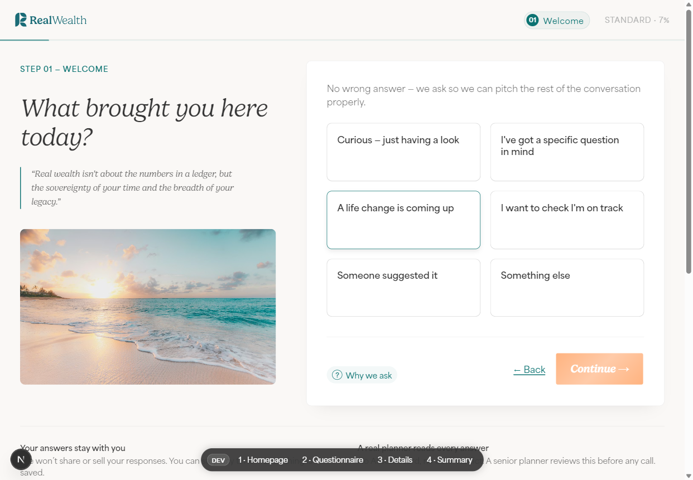
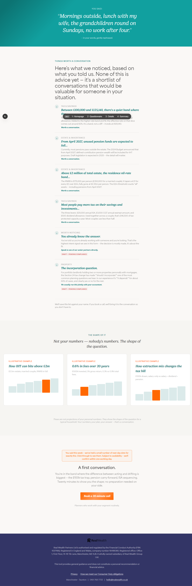

Landing page
Explains the promise, lets the visitor choose quick, standard, or thorough.
Client review website
A branded guide to the Real Wealth lead-magnet service: what the user experiences, how the question flow adapts, what content can trigger, and what needs to happen before public launch.


How the service works
The visitor chooses a depth, answers a conversational form, receives tailored prompts and a summary, then can book a call with Real Wealth. The system is designed to make the first planner conversation warmer, more specific, and easier to prepare for.
Explains the promise, lets the visitor choose quick, standard, or thorough.
Sets tone and captures what real wealth means to the person.
Age, household, work status, income, and estate band assign a planning segment.
The segment matrix decides which later questions are shown, conditional, or skipped.
Answer patterns can show provocations, awareness checks, and summary overlays.
The visitor submits details and moves into booking, CRM, and adviser follow-up.
What has been built
The demo is a Next.js single-page app with a content-as-code layer, typed catalogues, adaptive question routing, segment assignment, and review-ready content libraries.
Next.js app, component library, content schemas.
Tier picker, question screens, navigation, local session state.
Nine ranked rules and S5 to S6 upgrade behaviour.
Markdown content validates into typed TypeScript catalogues.
Demo components are connected; production integrations remain.
Postgres submission storage and consent log are designed but not live.
HubSpot is assumed, with alternative CRM options possible.
Question flow
The app asks the same opening questions for everyone, assigns a segment silently after the money-today screen, then continues with only the sections that make sense for that person.
Used for retirement, business exit, pre-retirement, and HNW context.
Identifies partner, children, adult children, elderly parent, or solo planning.
Separates employed, self-employed, business owner, retired, and between-role journeys.
Identifies high-earner tax traps and income-led segment fit.
Creates senior, HNW, IHT, and estate-planning routes.
Triggered content
Provocations create timely commercial prompts. Awareness checks educate the user on planning pitfalls and capture whether they already knew the issue.
Delivery model
The current demo keeps data local to the browser. Production should add encrypted submission storage, consent logging, CRM record creation, and calendar prefill.
Markdown files are validated by Zod schemas, then compiled into typed catalogues consumed by the React app.
Provocations and awareness checks carry review status. Production should only render approved-to-ship content.
Postgres should store submissions, answers, segment, fired triggers, consent text, and timestamps.
HubSpot is assumed. Captured fields can create a lead, attach segment metadata, and enroll follow-up workflows.
Review library
The documents that were linked from the original dashboard are rendered here as HTML pages so the client can review the whole service without opening raw Markdown files.
How copy is edited in the content folder and validated before shipping.
Document Wealth Conversation SpecThe core service specification for the lead magnet and client journey.
Document Prototype Action PlanThe build plan, trigger matrix, data flow, and pilot plan.
Document App Build PromptThe prompt used to scaffold the demo from the master template.
Document Master Template READMEEngineering guide to the Next.js scaffold and project layout.
Document Decision LogWhat was kept, what was cut, and what remains open.
Document Brand OverviewReal Wealth positioning, audiences, services, and tone.
Document Voice and ToneWriting rules, banned phrases, and voice guidance.
Document Colour Palette and TokensPrimary, secondary, and neutral colours with usage guidance.
Document Segmentation Design CompanionThe nine-segment model, five-question gate, and route matrix.
Document Question Design OptionsThe question catalogue and interaction patterns used in the form.